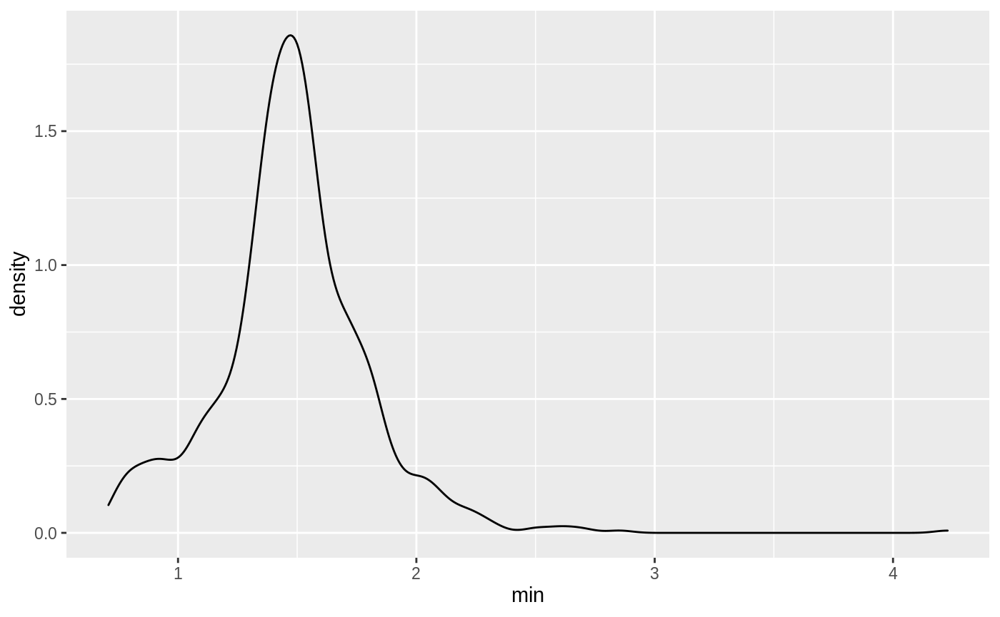
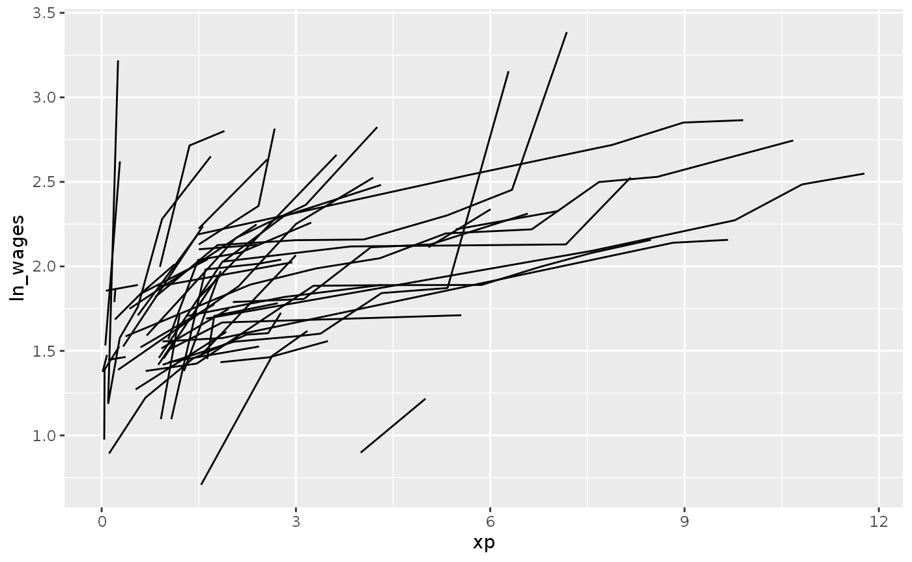
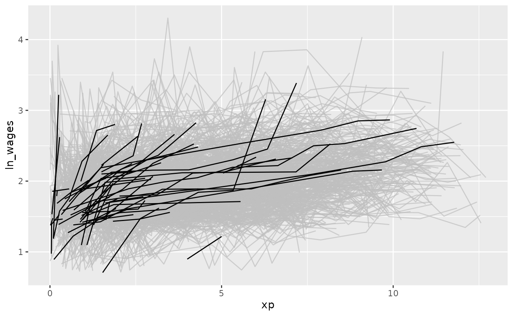

When you are presented with longitudinal data, it is useful to summarise the data into a format where you have one row per key. That means one row per unique identifier of the data - if you aren’t sure what this means, see the vignette, “Longitudinal Data Structures”.
So, say for example you wanted to find features in the wages data, which looks like this:
library(brolgar)
wages
#> # A tsibble: 6,402 x 9 [!]
#> # Key: id [888]
#> id ln_wages xp ged xp_since_ged black hispanic high_grade
#> <int> <dbl> <dbl> <int> <dbl> <int> <int> <int>
#> 1 31 1.49 0.015 1 0.015 0 1 8
#> 2 31 1.43 0.715 1 0.715 0 1 8
#> 3 31 1.47 1.73 1 1.73 0 1 8
#> 4 31 1.75 2.77 1 2.77 0 1 8
#> 5 31 1.93 3.93 1 3.93 0 1 8
#> 6 31 1.71 4.95 1 4.95 0 1 8
#> 7 31 2.09 5.96 1 5.96 0 1 8
#> 8 31 2.13 6.98 1 6.98 0 1 8
#> 9 36 1.98 0.315 1 0.315 0 0 9
#> 10 36 1.80 0.983 1 0.983 0 0 9
#> # … with 6,392 more rows, and 1 more variable: unemploy_rate <dbl>You can return a dataset that has one row per key, with say the minimum value for ln_wages, for each key:
#> # A tibble: 888 x 2
#> id min
#> <int> <dbl>
#> 1 31 1.43
#> 2 36 1.80
#> 3 53 1.54
#> 4 122 0.763
#> 5 134 2.00
#> 6 145 1.48
#> 7 155 1.54
#> 8 173 1.56
#> 9 206 2.03
#> 10 207 1.58
#> # … with 878 more rowsThis then allows us to summarise these kinds of data, to say for example find the distribution of minimum values:

We call these summaries features of the data.
This vignette discusses how to calculate these features of the data.
We can calculate features of longitudinal data using the features function (from fabletools, made available in brolgar).
features works by specifying the data, the variable to summarise, and the feature to calculate:
or with the pipe:
As an example, we can calculate a five number summary (minimum, 25th quantile, median, mean, 75th quantile, and maximum) of the data using feat_five_num, like so:
wages_five <- wages %>%
features(ln_wages, feat_five_num)
wages_five
#> # A tibble: 888 x 6
#> id min q25 med q75 max
#> <int> <dbl> <dbl> <dbl> <dbl> <dbl>
#> 1 31 1.43 1.48 1.73 2.02 2.13
#> 2 36 1.80 1.97 2.32 2.59 2.93
#> 3 53 1.54 1.58 1.71 1.89 3.24
#> 4 122 0.763 2.10 2.19 2.46 2.92
#> 5 134 2.00 2.28 2.36 2.79 2.93
#> 6 145 1.48 1.58 1.77 1.89 2.04
#> 7 155 1.54 1.83 2.22 2.44 2.64
#> 8 173 1.56 1.68 2.00 2.05 2.34
#> 9 206 2.03 2.07 2.30 2.45 2.48
#> 10 207 1.58 1.87 2.15 2.26 2.66
#> # … with 878 more rowsHere we are taking the wages data, piping it to features, and then telling it to summarise the ln_wages variable, using feat_five_num.
There are several handy functions for calculating features of the data that brolgar provides. These all start with feat_.
You can, for example, find those whose values only increase or decrease with feat_monotonic:
wages_mono <- wages %>%
features(ln_wages, feat_monotonic)
wages_mono
#> # A tibble: 888 x 5
#> id increase decrease unvary monotonic
#> <int> <lgl> <lgl> <lgl> <lgl>
#> 1 31 FALSE FALSE FALSE FALSE
#> 2 36 FALSE FALSE FALSE FALSE
#> 3 53 FALSE FALSE FALSE FALSE
#> 4 122 FALSE FALSE FALSE FALSE
#> 5 134 FALSE FALSE FALSE FALSE
#> 6 145 FALSE FALSE FALSE FALSE
#> 7 155 FALSE FALSE FALSE FALSE
#> 8 173 FALSE FALSE FALSE FALSE
#> 9 206 TRUE FALSE FALSE TRUE
#> 10 207 FALSE FALSE FALSE FALSE
#> # … with 878 more rowsThese could then be used to identify individuals who only increase like so:
library(dplyr)
#>
#> Attaching package: 'dplyr'
#> The following objects are masked from 'package:stats':
#>
#> filter, lag
#> The following objects are masked from 'package:base':
#>
#> intersect, setdiff, setequal, union
wages_mono %>%
filter(increase)
#> # A tibble: 50 x 5
#> id increase decrease unvary monotonic
#> <int> <lgl> <lgl> <lgl> <lgl>
#> 1 206 TRUE FALSE FALSE TRUE
#> 2 295 TRUE FALSE FALSE TRUE
#> 3 518 TRUE FALSE FALSE TRUE
#> 4 1508 TRUE FALSE FALSE TRUE
#> 5 2178 TRUE FALSE FALSE TRUE
#> 6 2194 TRUE FALSE FALSE TRUE
#> 7 2330 TRUE FALSE FALSE TRUE
#> 8 2456 TRUE FALSE FALSE TRUE
#> 9 2612 TRUE FALSE FALSE TRUE
#> 10 2890 TRUE FALSE FALSE TRUE
#> # … with 40 more rowsThey could then be joined back to the data
wages_mono_join <- wages_mono %>%
filter(increase) %>%
left_join(wages, by = "id")
wages_mono_join
#> # A tibble: 164 x 13
#> id increase decrease unvary monotonic ln_wages xp ged xp_since_ged
#> <int> <lgl> <lgl> <lgl> <lgl> <dbl> <dbl> <int> <dbl>
#> 1 206 TRUE FALSE FALSE TRUE 2.03 1.87 0 0
#> 2 206 TRUE FALSE FALSE TRUE 2.30 2.81 0 0
#> 3 206 TRUE FALSE FALSE TRUE 2.48 4.31 0 0
#> 4 295 TRUE FALSE FALSE TRUE 1.79 2.03 0 0
#> 5 295 TRUE FALSE FALSE TRUE 1.81 3.12 0 0
#> 6 295 TRUE FALSE FALSE TRUE 2.11 4.16 0 0
#> 7 295 TRUE FALSE FALSE TRUE 2.13 5.08 0 0
#> 8 295 TRUE FALSE FALSE TRUE 2.31 6.58 0 0
#> 9 518 TRUE FALSE FALSE TRUE 1.27 0.525 1 0.525
#> 10 518 TRUE FALSE FALSE TRUE 1.61 1.93 1 1.93
#> # … with 154 more rows, and 4 more variables: black <int>, hispanic <int>,
#> # high_grade <int>, unemploy_rate <dbl>And these could be plotted:

To get a sense of the data and where ti came from, we could create a plot with gghighlight to highlight those that only increase, by using gghighlight(increase) - since increase is a logical, this tells gghighlight to highlight those that are TRUE.
library(gghighlight)
wages_mono %>%
left_join(wages, by = "id") %>%
ggplot(aes(x = xp,
y = ln_wages,
group = id)) +
geom_line() +
gghighlight(increase)
You can explore the available features, see the function References
To create your own features or summaries to pass to features, you provide a named list of functions. For example:
library(brolgar)
feat_three <- list(min = min,
med = median,
max = max)
feat_three
#> $min
#> function (..., na.rm = FALSE) .Primitive("min")
#>
#> $med
#> function (x, na.rm = FALSE, ...)
#> UseMethod("median")
#> <bytecode: 0x1818ec0>
#> <environment: namespace:stats>
#>
#> $max
#> function (..., na.rm = FALSE) .Primitive("max")These are then passed to features like so:
wages %>%
features(ln_wages, feat_three)
#> # A tibble: 888 x 4
#> id min med max
#> <int> <dbl> <dbl> <dbl>
#> 1 31 1.43 1.73 2.13
#> 2 36 1.80 2.32 2.93
#> 3 53 1.54 1.71 3.24
#> 4 122 0.763 2.19 2.92
#> 5 134 2.00 2.36 2.93
#> 6 145 1.48 1.77 2.04
#> 7 155 1.54 2.22 2.64
#> 8 173 1.56 2.00 2.34
#> 9 206 2.03 2.30 2.48
#> 10 207 1.58 2.15 2.66
#> # … with 878 more rows
heights %>%
features(height_cm, feat_three)
#> # A tibble: 144 x 4
#> country min med max
#> <chr> <dbl> <dbl> <dbl>
#> 1 Afghanistan 161. 167. 168.
#> 2 Albania 168. 170. 170.
#> 3 Algeria 166. 169 171.
#> 4 Angola 159. 167. 169.
#> 5 Argentina 167. 168. 174.
#> 6 Armenia 164. 169. 172.
#> 7 Australia 170 172. 178.
#> 8 Austria 162. 167. 179.
#> 9 Azerbaijan 170. 172. 172.
#> 10 Bahrain 161. 164. 164
#> # … with 134 more rowsInside brolgar, the features are created with the following syntax:
feat_five_num <- function(x, ...) {
list(
min = b_min(x, ...),
q25 = b_q25(x, ...),
med = b_median(x, ...),
q75 = b_q75(x, ...),
max = b_max(x, ...)
)
}Here the functions b_ are functions with a default of na.rm = TRUE, and in the cases of quantiles, they use type = 8, and names = FALSE.
If you want to run many or all features from a package on your data you can collect them all with feature_set. For example:
You could then run these like so:
wages %>%
features(ln_wages, feat_brolgar)
#> # A tibble: 888 x 37
#> id min med max min1 q25 med1 q75 max1 min2 max2 range_diff
#> <int> <dbl> <dbl> <dbl> <dbl> <dbl> <dbl> <dbl> <dbl> <dbl> <dbl> <dbl>
#> 1 31 1.43 1.73 2.13 1.43 1.48 1.73 2.02 2.13 1.43 2.13 0.696
#> 2 36 1.80 2.32 2.93 1.80 1.97 2.32 2.59 2.93 1.80 2.93 1.13
#> 3 53 1.54 1.71 3.24 1.54 1.58 1.71 1.89 3.24 1.54 3.24 1.70
#> 4 122 0.763 2.19 2.92 0.763 2.10 2.19 2.46 2.92 0.763 2.92 2.16
#> 5 134 2.00 2.36 2.93 2.00 2.28 2.36 2.79 2.93 2.00 2.93 0.927
#> 6 145 1.48 1.77 2.04 1.48 1.58 1.77 1.89 2.04 1.48 2.04 0.56
#> 7 155 1.54 2.22 2.64 1.54 1.83 2.22 2.44 2.64 1.54 2.64 1.10
#> 8 173 1.56 2.00 2.34 1.56 1.68 2.00 2.05 2.34 1.56 2.34 0.776
#> 9 206 2.03 2.30 2.48 2.03 2.07 2.30 2.45 2.48 2.03 2.48 0.454
#> 10 207 1.58 2.15 2.66 1.58 1.87 2.15 2.26 2.66 1.58 2.66 1.08
#> # … with 878 more rows, and 25 more variables: iqr <dbl>, var <dbl>, sd <dbl>,
#> # mad <dbl>, iqr1 <dbl>, min3 <dbl>, max3 <dbl>, median <dbl>, mean <dbl>,
#> # q251 <dbl>, q751 <dbl>, range1 <dbl>, range2 <dbl>, range_diff1 <dbl>,
#> # sd1 <dbl>, var1 <dbl>, mad1 <dbl>, iqr2 <dbl>, increase <dbl>,
#> # decrease <dbl>, unvary <dbl>, increase1 <lgl>, decrease1 <lgl>,
#> # unvary1 <lgl>, monotonic <lgl>For more information see ?fabletools::feature_set
If you create features in your own package and want to make them accessible with feature_set, do the following.
Functions can be registered via fabletools::register_feature(). To register features in a package, I create a file called zzz.R, and use the .onLoad(...) function to set this up on loading the package: